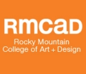

The 20 Best Online Bachelors in Graphic Design Degree Programs
The industry of graphic design is wildly popular. As technological advances open new doors for design options, the careers of graphic designers become more specialized and complex. These same advances in technology, however, are also absorbing some of the jobs that were previously held by professional graphic designers. This is the likely cause for the industry’s growth dropping to 7%, which is noticeably below the national average. Combating this downfall is the impressive median pay of graphic designers, which is well above the national average. Another benefit is that the field is robust and varied enough to offer positions at all level of experience, be it entry-level or master.
Featured Online Graphic Design Degree Programs
When an industry is growing at a below-average rate, professionals within the industry will face a high level of competition for jobs at every level of experience. Thus many students are seeking out the best programs for earning their Bachelor of Graphic Design in order to stand out from the competition and establish a strong foundation for professional success. Graphic design programs have a natural symbiosis with online learning, as many residential programs employ virtual learning software, making online graphic design programs uniquely appealing, as they offer higher levels of flexibility and convenience without sacrificing traditional learning methods of the degree. Because of this we have focused this list on the top online graphic design programs. You can find an explanation of the metric used to design this ranking below.
1. Southern New Hampshire University

Southern New Hampshire University is a school well-known for its dedication to online learning. This dedication is evidenced by their innovative strategies for elevating the academic rigor of distance learning options. Foremost among these strategies are the following: maintaining small class sizes to ensure instructor-peer relationships and communication, assigning personal advisers who guide and oversee students throughout their time in the program, and employing the alumni network to provide students with learning, internship, and career opportunities. The graphic design program specifically often assigns corporate assignments to its students so that they may start building real-world experience early in their career. Students also have the option to take the accelerated learning track in order to finish their degree quicker and can choose from two concentration options to help establish specialization and career focus.
2. Art Institute of Pittsburgh
The Art Institute of Pittsburgh is a nationally recognized art school that offers a fully online Bachelor of Science in Graphic Design. The program is designed around achieving successful career outcomes amidst increasing competition. Thus one of the hallmarks of this program is its emphasis on intensive portfolio building. The majority of the program’s projects and assignments serve to build a student’s experience into materials that can be presented to employers after graduation. The program also uses virtual classroom technology, so that students can collaborate in real-time and engage in discussions under the supervision of a present instructor. The program’s faculty are successful graphic designers from the industry with decades of teaching experience, who design the curriculum according to the developments and needs of the ever changing industry. The program also offers “life experience credit” to students, who have a history with graphic design, helping them to earn their degree in a shorter amount of time with less expenses.
3. Liberty University

Liberty University is a highly popular online university that offers a Bachelor of Fine Arts in Graphic Design. The Fine Arts degree qualification means that the program is able to broaden the focus of the curriculum to the theories and conceptual foundations that define professional graphic design, so that students will be prepared to pursue any specialization within the field upon graduation. The program is one of the few on this list to require a portfolio submission before admission. This is in place to both insure that students are prepared for the rigorous learning and to determine the experience and skill level of students. For those able to take on more work, the program offers intensive course options, where students can take on more demanding projects in order to build more skills and develop a more robust portfolio.
5. University of Maryland
The University of Maryland offers a fully online graphic communication bachelor’s degree. As implied by the name, he graphic communication’s degree focuses on conveying information through the visual spectrum. The program trains students in graphic art and design, computer graphics, communication, business-oriented writing, and publication. The program also offers certification tracks and a wide-array of related minor’s degree options to help students build concentrated experience backgrounds and pursue personal interests. While offering a great deal of personal choice and flexibility, the program ensures linear progression and academic rigor through a portfolio-intensive curriculum where students build towards the demands of the potential employers of their chosen career paths.
5. University of Florida

The University of Florida is a nationally recognized institution of enormous size. In recent years, the University has redirected many of its resources to developing distance-learning options. Among these is their Bachelor of Arts in Digital Arts and Sciences. This program is only offered to students, who already hold an Associate of Arts degree. This requirement, however, allows the program is maintain a higher level of academic rigor, requiring more effort from students but less time, as the program can be completed in two years or less. The University’s Digital Worlds Institute has earned national and international reputation for its use of online collaboration systems and other interactive media innovations. Digital Worlds was awarded the 2008 “Most Innovative Program” award by the International Digital Arts and Media Association (IDMAA). So while the program has a higher price tag and more requirements than others on this list, students can be assured this program will deliver a top-notch education.
6. Rasmussen College
Dating back to 1900 Rasmussen College has over one hundred years of experience in education. Rasmussen’s School of Design offers a graphic design program that pulls from this extensive experience and offers students unique options. Foremost among these is the “Flex Choice” option, where students supplement faculty-led courses with self-paced courses. This accommodates students with even the busiest and most demanding schedules, and conversely it allows students, who are willing to take on more work, a way to accelerate their education. Students who take the accelerated Flex Choice route can shave up to a year off of the program time and can finish in just one year. The program also offers two degree specialization options in animation and motion graphics, and in web and interactive design.
7. Bellevue University

Bellevue University is accredited by The Higher Learning Commission through the U.S. Department of Education and offers a fully online Bachelor of Arts in Graphic Design. To meet the evolving needs of the industry, the program employs a multidisciplinary curriculum so that students are well-versed in all areas of the field are able to approach challenges from multiple perspectives. The program also employs industry-standard software and programs, so that students may begin building relevant experience and skillsets with them. Students will also develop a portfolio during their time in the program that spans an array of project types in both print and graphics, so students will have a foundation in whichever specialization they choose.
8. Ashford University
Distance learning options are the hallmark of Ashford University. Among these is the Bachelor of Arts in Computer Graphic Design. As implied by the name of the degree, this program focuses on the intersection between computer science and graphic design. Thus the program combines the application of visual art, communication, marketing, music, and computer programming skills to design new content and strategies for aiding modern businesses and industries. The program also empowers students through specialization options that are both personalizable and marketable. Students may choose to specialize in print media or web design, or to incorporate coursework from both.
9. Rocky Mountain College of Art and Design

Rocky Mountain College of Art and Design is a nationally recognized school that specializes in the education of graphic design. The school’s Bachelor of Fine Arts in Graphic Design program utilizes its alumni and professional network across the nation to offer students real-world projects from employers and organizations. This allows students to begin building highly relevant portfolio material early on in their careers. The program also allows students to begin shaping experiential concentrations through student-chosen electives and capstone courses where students will demonstrate the ability to conceive, create, and communicate design-oriented solutions to complex issues. The program also emphasizes interconnectedness and collaboration, so students will receive one on one teaching and guidance from their professors and will work with their peers in real-time on group projects.
10. California University of Pennsylvania

California University of Pennsylvania offers a fully online Bachelor of Science in Graphic Design. In the words of the program director, the focus of the degree is “the development of concepts, skills and sensitivities essential to the graphics designer.” This broad approach is designed to prepare students for the variety of contexts in which they might find themselves needed. This program combines the strengths of the University’s Department of Art and Design, and the Department of Applied Engineering and Technology to provide students with a broad range of design and technical skills. The program also emphasizes real-world experience and practical learning projects, and connects students to both community-sourced projects and relevant internships.
11. DeVry University

DeVry University is a well-known name in online education and offers a web graphic design program. The name of the degree implies that the program emphasizes internet technology and web-based software. This emphasis means that the curriculum is designed to master key software applications, fundamental design principles, web content management, and animation. The program also offers a specialized study track in multimedia design for students interested in the development, dissemination, design of both media content and media content development systems. For students looking for efficient learning options, the program also offers an accelerated learning track which can save time and money in completing the degree.
12. Herzing University
Herzing University is a private, nonprofit institution that offers a large number of distance learning programs. Among these is the graphic design program, which is designed around intensive portfolio building. Students will have the choice of either pursuing their degree through a broad curriculum or through a specialized spectrum. Students seeking to concentrate their area of study can choose between either a print concentration or a web-based concentration. No matter the area of concentration, students will then be tasked with developing projects that will ultimately culminate in a robust and marketable portfolio. The content that makes up the students’ portfolios is largely self-directed according to the student’s’ career goals and potential employer’s needs.
13. Full Sail University
Full Sail University has both residential and online components where the same faculty teach both, so that online students are assured the same quality learning experience as those who attend class in the traditional manor. The University offers a fully online Bachelor of Science in Graphic Design where the central focus is to familiarize students with the software, technology, and strategies used by top-end professionals in the field today. Once students have mastered the tools of the trade, they will be able to choose from four different concentration options, where they will delve deeper into the study of one of the following: print and 2D, motion graphics, interactive design, or portfolio development. Regardless of concentration, this program is one of few to mandate the study of interactive design, which is a very new development in the industry and is regarded by the program a major part of the future of the industry.
14. Independence University
Independence University’s School of Graphic Arts offers several Bachelor of Science degree options in graphic designing, both at the associate and the bachelor’s level. Motivating and developing creativity in its students is a hallmark of all the graphic design programs. Research posted on the program’s front page suggests that 52% of marketing and advertising executives have trouble finding skilled creative professionals. Thus the School of Graphic Art programs are designed to remedy this issue, and connect its students with job opportunities in the field. To development students into marketable assets the program ensures that they choose a specialty, so that they may focus all of their energy on mastering a set of specific skills and concepts. Students may choose from one of these three degree options, a BS in graphic arts, a BS in web design and development, or a BS in graphic arts with an information design emphasis.
15. Arizona State University

Arizona State University is a nationally ranked school with a long history of education and a massive student and alumni body. In recent years, the school has dedicated more of its resources to optimizing the school’s distance learning options. Among these options is the fully online Bachelor of Science in Graphic Information Technology. The program’s curriculum is based on a web-based concentration where students will master web development, along with print, photography, and multimedia. Throughout mastering these topics, students will become familiarized with the fields cutting-edge web-based software, graphical programming tools, and all relevant protocols for web-based graphic design.
16. Savannah College of Art and Design
Savannah College of Art and Design (SCAD) is a popular school based out of the Southeast in Georgia where it pulls from professional and alumni connections from Atlanta and nearby states, where there are multiple advertising and marketing tycoons. SCAD offers multiple graphic design degree options at both the master’s and bachelor’s level. Among these are the Bachelor of Art in Visual Communication and the Bachelor of Fine Art in Graphic Design. Both programs are apart of SCAD’s award winning eLearning Program, which engages the community and international professional resources to supplement coursework. For instance, while building their professional portfolios students will virtually meet with industry leaders to gain real-time advice and information on the evolving field of graphic design, so that they may have a leg up on the increasing competition in the field.
17. Academy of Art University
The Academy of Art University offers fully online graphic design programs at the master’s, bachelor’s, and associate’s level. While many of the programs on this list have only recently begun offering graphic design programs or are new to the arena of online education, The Academy of Art University has been offering fully online graphic design programs for nearly 15 years, and as such the University’s School of Graphic Design has become one of the top in the field. The Bachelor of Fine Arts in Graphic Design degree program emphasizes training students typography, print and editorial design, branding and identity, information design, and packaging, as well as production and presentation skills. The program culminates in a final portfolio of the student’s work, and the School of Graphic Design touts that the quality of these portfolios represents the quality of their program, and thus they showcase students’ portfolios and help them connect with employers and other opportunities.
18. Berkeley College
Berkeley College has a long and prestigious history and has been serving students for over 85 years and offers a Bachelor of Fine Art in Graphic Design. While many of the schools on this list suggest that specialization is the key to marketability in the competitive job market, Berkeley’s program is centralized around the idea that a successful graphic designer is one who is familiar with all areas of the field. Thus the program takes a broad approach to the curriculum while ensuring that students master current industry software for web design, typography, raster and vector manipulation, and other applications
19. California College, San Diego
California College is a relatively new institution, and as such boasts the unique benefit of designing new programs around the most current industry standards and demands. Beyond that the College offers a great deal of student flexibility, with multiple start dates and self-paced course options where students can tailor their workload according to personal needs. Students may choose from graphic design programs at the bachelor’s and associate’s level. Students also have the opportunity to pursue specific interests and develop concentrated skillsets in either of these three degree options, a Bachelor of Science in Graphic Arts, a Bachelor of Science in Graphic Arts with a Information Design Emphasis, or a Bachelor of Science in Web Design and Development.
20. Westwood College
Westwood College offers a Bachelor’s in graphic design with a concentration in visual communication. The first major concentration of the curriculum is to prepare students to successfully use the tools of the trade, as students progress through the program they will learn to master Adobe® certificates such as InDesign®, Illustrator®, Dreamweaver®, and Photoshop®. The program also mandates a portfolio-centered progression system where students will master various skillsets and showcase them in their portfolio. Upon graduating students will have a well-developed portfolio showcasing expert-level design and content creation in print, digital and web formats. The program also emphasizes the importance of interactive multimedia design in the future of the industry, and employs several programs to train students in the relevant skillsets and concepts.
Methodology:
- Affordability (1/3): The average out-of-state tuition per credit hour.
- Flexibility (1/3): Whether the program offers specialized tracks, flexible hours, or personalized course loads.
- Academic Reputation (1/3): The rank of the school’s parent institution according to other prominent rankings such as US News